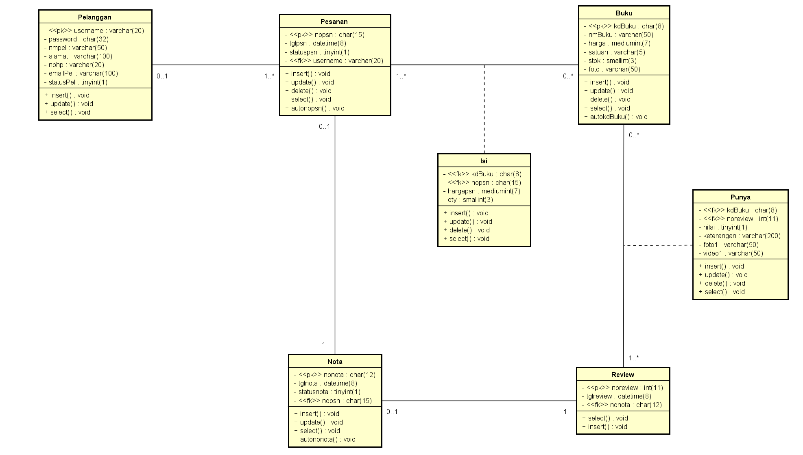
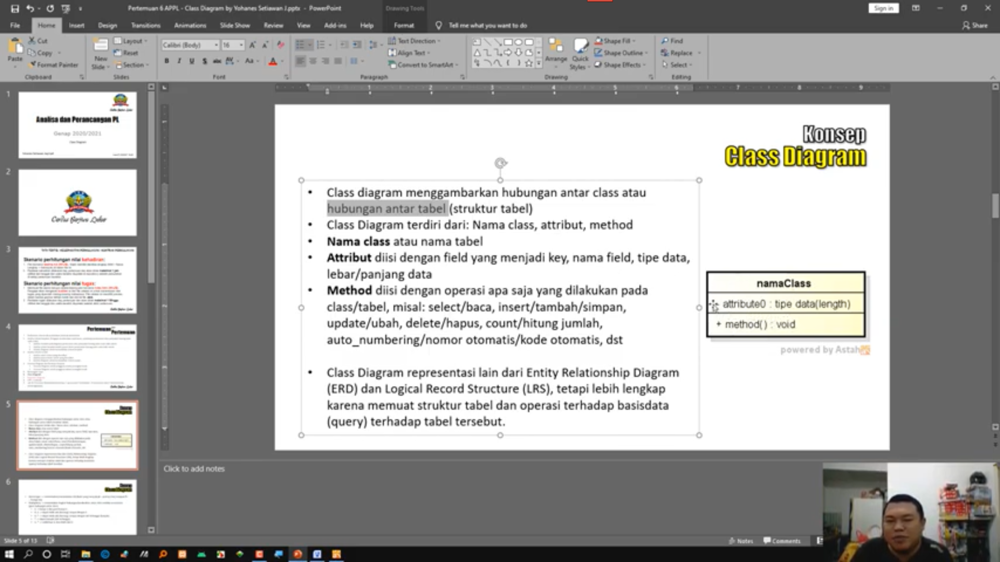
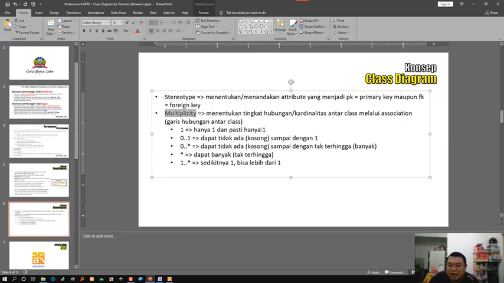
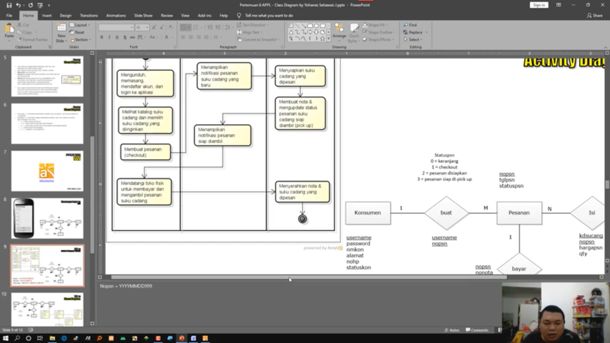
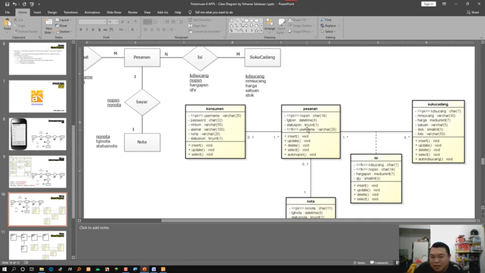
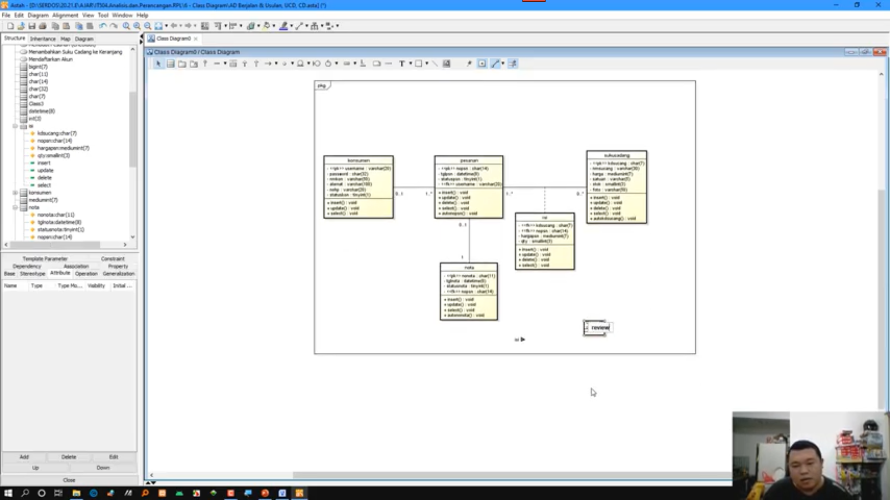

Selamat Pagi Pak :)
Nama Lengkap: Livren Sandi
NIM: 1811500097
Kelompok: TI6A
Hasil saya menyadur pertemuan ke 6:
- Mengingat kembali cerdas berbudi luhur
- Memahami tentang Diagram Class
- Memahami tentang Rancangan layar VS ERD
- Memahami tentang ERD VS Activity Diagram Usulan
- Memahami tentang ERD VS Diagram Class
- Memahami tentang LRS VS Class Diagram
Hasil file project astah Diagram Class Download
Gambar Diagram CLass: 
Screnshot materi yang diajarkan:




